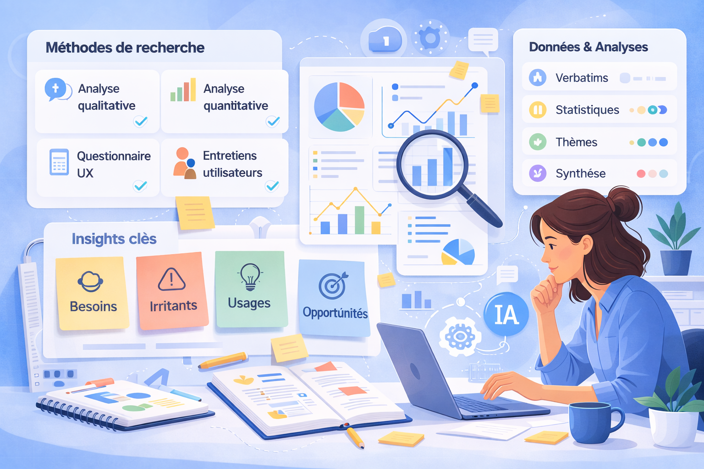

Étude de cas
Optimisation des services data de l’ADEME
Mission de service design, recherche utilisateur et analyse de données menée pour la Fabrique de la donnée de l’ADEME afin d’identifier les points de friction, structurer les besoins utilisateurs et formuler des recommandations concrètes d’amélioration de service.
Contexte
L’ADEME, via sa Fabrique de la donnée, propose des services data pour aider les organisations à développer, structurer et valoriser leurs produits et usages liés à la donnée.
Dans ce cadre, la mission visait à mieux comprendre les usages existants, les besoins des parties prenantes et les difficultés rencontrées dans l’accès, la compréhension et l’exploitation des ressources disponibles, afin d’optimiser l’offre de service.
Problème
L’offre de services manquait de lisibilité et certains utilisateurs rencontraient des difficultés à identifier les ressources adaptées à leurs besoins, à comprendre leur fonctionnement ou à les mobiliser efficacement dans leurs projets.
En parallèle, les équipes internes avaient besoin d’une vision plus claire et plus structurée des attentes réelles des utilisateurs pour pouvoir améliorer leurs services, prioriser les évolutions et mieux aligner les décisions avec les besoins terrain.
Objectifs
- Analyser les interactions existantes et identifier les points de friction.
- Recueillir des insights qualitatifs et quantitatifs auprès des parties prenantes.
- Mieux comprendre les attentes, besoins et irritants des utilisateurs.
- Synthétiser les apprentissages dans des livrables clairs et actionnables.
- Formuler des recommandations stratégiques pour améliorer les services.
Recherche
Pour construire une vision complète de l’expérience et des besoins, j’ai combiné plusieurs approches qualitatives et quantitatives afin de croiser les perceptions, objectiver les constats et produire des recommandations solides.
Méthodes utilisées
- Analyse qualitative de plus de 90 retours utilisateurs et parties prenantes
- Transcription et analyse assistées par IA pour extraire les thèmes récurrents
- Structuration des insights via une approche de recherche atomique
- Mesures quantitatives à partir de questionnaires UX standardisés
- Analyse statistique descriptive et inférentielle sur plus de 20 indicateurs
- Création de personas et de livrables de synthèse pour restituer les résultats

Principaux enseignements
- Une forte volumétrie de données qualitatives nécessitait une méthode rigoureuse pour détecter les sujets récurrents et produire des insights réutilisables.
- Le croisement entre données qualitatives et quantitatives a permis de réduire les biais d’interprétation et de confirmer certains constats.
- Les besoins utilisateurs pouvaient être regroupés autour de thèmes structurants liés à la satisfaction, à l’utilisabilité et à l’accès aux ressources.
- La synthèse des résultats dans des formats clairs et visuels était essentielle pour faciliter leur appropriation par les équipes.
- Les résultats ont mis en évidence plusieurs opportunités d’optimisation de service, à la fois sur l’expérience utilisateur et sur la structuration de l’offre.
Solution
À partir des analyses menées, j’ai traduit les enseignements recueillis en livrables de synthèse et en recommandations stratégiques pour aider les équipes à améliorer la lisibilité, l’utilité et la performance de leurs services.
Ce que j’ai proposé
- Structuration des résultats en insights clairs, exploitables et priorisés.
- Création de personas pour représenter les segments utilisateurs et leurs besoins.
- Production de livrables visuels pour faciliter le partage et la prise de décision.
- Formulation de recommandations de service orientées impact et faisabilité.
- Identification de pistes d’optimisation pour simplifier l’expérience et mieux répondre aux usages réels.
Pourquoi
L’enjeu n’était pas seulement d’analyser des données, mais de transformer des signaux dispersés en décisions concrètes. Dans un contexte de service public et de sujet complexe lié à la donnée, la clarté, la structuration et la capacité à relier les résultats à des actions étaient essentielles.
Les recommandations visaient donc à aider les équipes à mieux comprendre leurs utilisateurs, à prioriser les évolutions les plus pertinentes et à améliorer la qualité globale du service rendu.
Résultats de la mission
La mission a permis de produire une lecture structurée des besoins utilisateurs, de mettre en évidence les axes d’amélioration majeurs et de fournir aux équipes des livrables utiles pour orienter leurs décisions et l’évolution de leurs services.
Mon rôle
J’ai mené cette mission de manière autonome, en remplacement d’un collègue, tout en collaborant étroitement avec un Product Manager et un Mission Director. Mon rôle couvrait l’ensemble de la démarche, de la recherche à la formulation des recommandations.
- Analyse qualitative de verbatims et de retours utilisateurs
- Analyse quantitative de questionnaires et de mesures UX
- Structuration et synthèse des insights de recherche
- Création de personas et de livrables de restitution
- Formulation de recommandations stratégiques d’optimisation de service
- Collaboration avec les parties prenantes pour transformer les résultats en actions